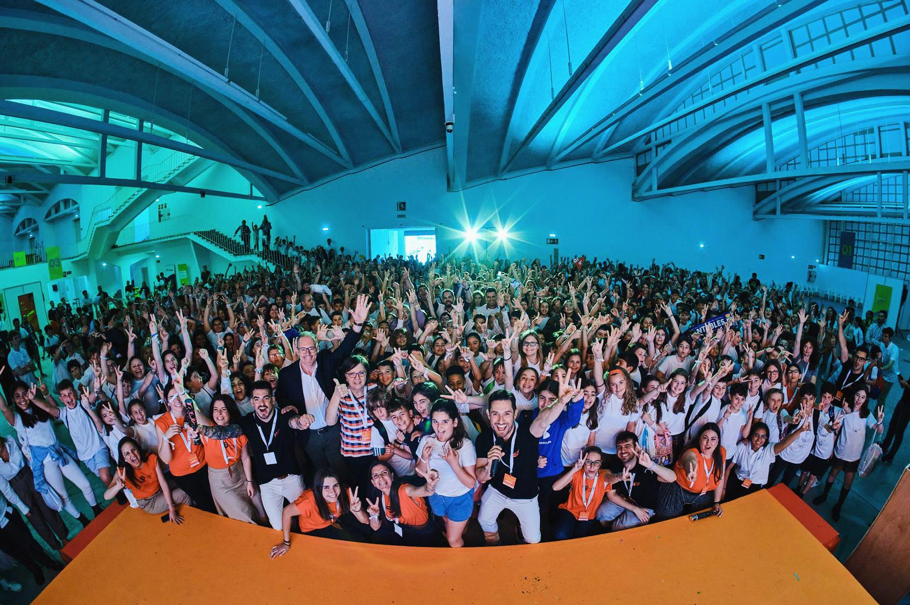
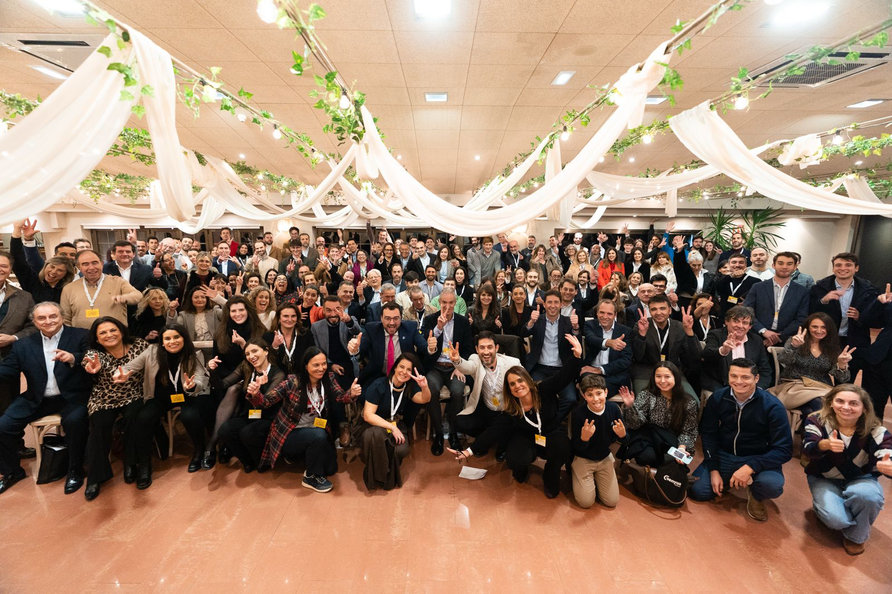
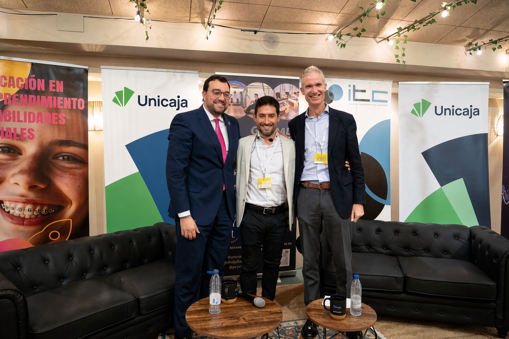
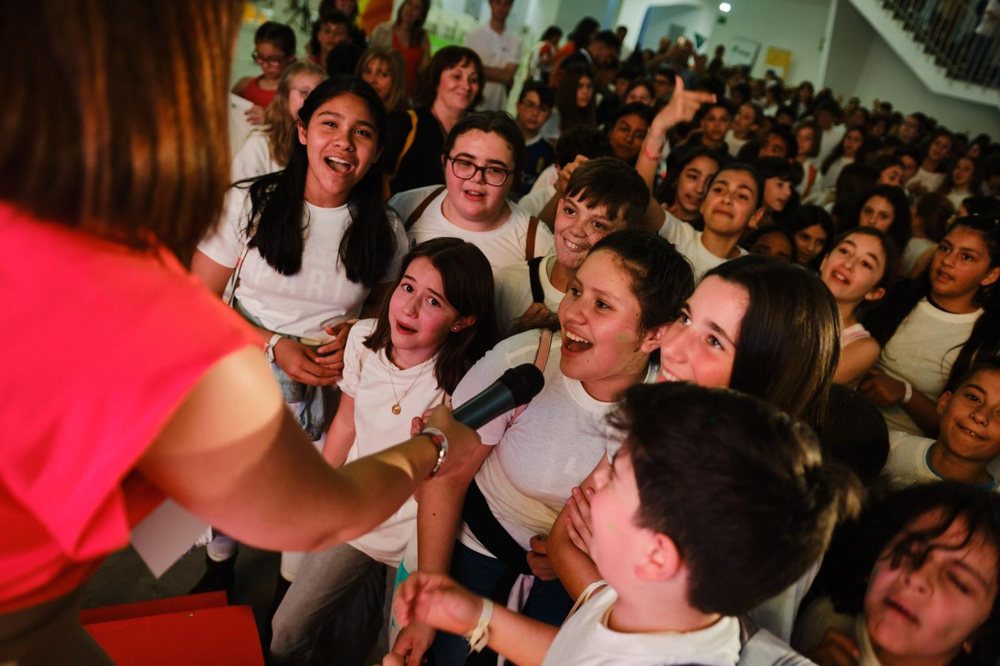
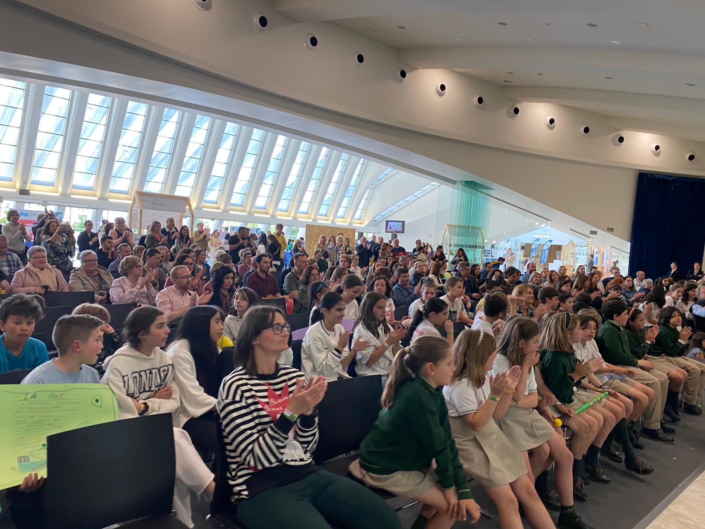
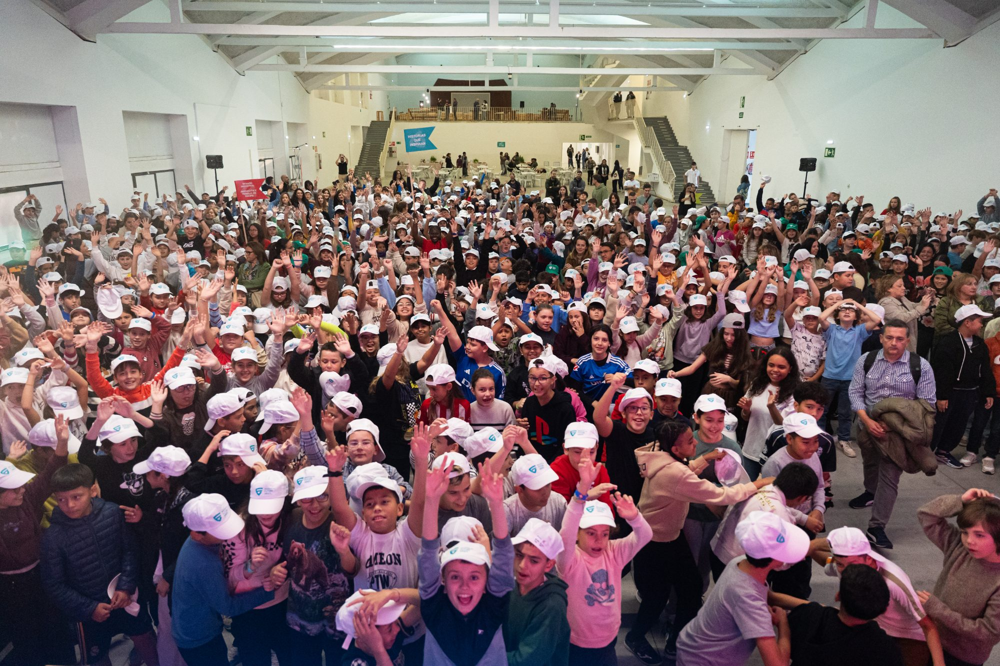

Empresas, instituciones, líderes y centros educativos construyendo algo que dura todo el año. Tu marca puede estar en esa conversación.

La puerta de entrada al ecosistema. Una tarde en un entorno cuidado, con networking real y presencia institucional de primer nivel. Hacienda La Llorea Golf, Gijón.

{{ t.text }}
{{ t.text }}
Conectamos a quienes toman decisiones con quienes están formando a la próxima generación. Empresas, instituciones, colegios, familias y jóvenes en la misma conversación.
El altavoz del ecosistema: líderes empresariales e institucionales en una pieza audiovisual que circula todo el año. Producido junto a Neozink, agencia productora de referencia nacional.
Asocia tu marca a la conversación: contenido propio, no un logo.
Educación, talento y emprendimiento en colegios, familias y jóvenes de toda España, con la ejecución real de Genyus School.
{{ c.text }}

Edición inaugural en verano de 2027. Impulsado junto a El Comercio como media partner, con el apoyo del Ayuntamiento de Gijón.
Julio 2027 · GijónUna RSC con resultado: contada y medida con datos, no con intenciones.

El reconocimiento a los centros educativos, docentes y proyectos que mejor impulsan el emprendimiento, la creatividad y el talento de los más jóvenes en Asturias. La noche en la que la educación asturiana se celebra.
Da nombre a una categoría y vincula tu marca al talento educativo y al impacto social: una RSC con rostro y resultado.

Jornada completa, escenario, ponentes y un público que va más allá de lo empresarial. Acuerdos de colaboración abiertos desde octubre de 2026.
Las marcas que mejor funcionan en el Fest son las que llegan con tiempo.
{{ w.text }}
El AsturiasAfterWork es la puerta. El Future Minds Fest, los Premios y el ecosistema durante todo el año son el sitio donde las marcas que de verdad quieren liderar deciden estar.
Cada acuerdo se cierra a medida según el alcance. Escríbenos a info@genyusschool.com y te enviamos el dossier con las modalidades.
Cada acuerdo se cierra a medida. Una reunión de 30' basta para ver si hay encaje.
Elegimos cuidar la experiencia antes que sumar marcas. Por eso cada año entran solo unas pocas. Si crees que encajáis, hablemos.